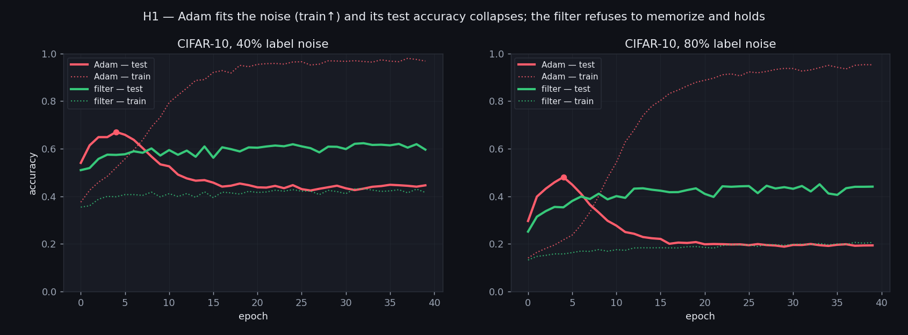
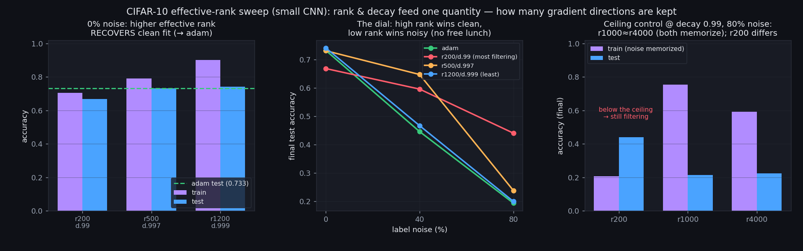
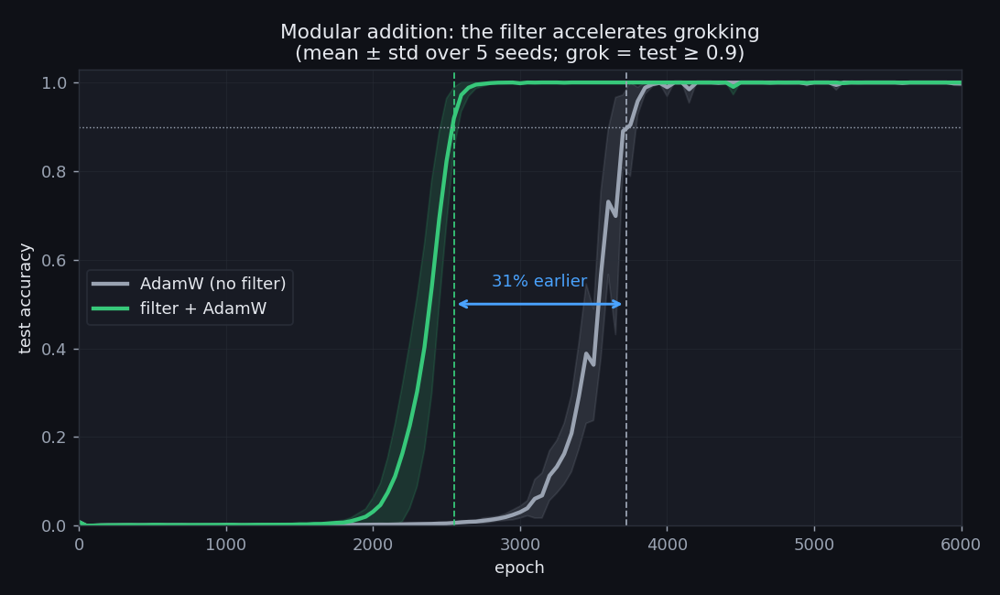
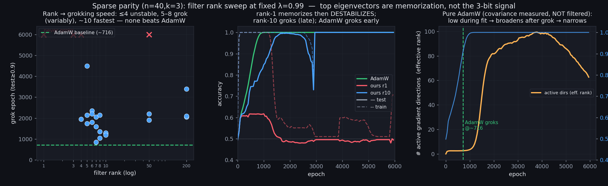
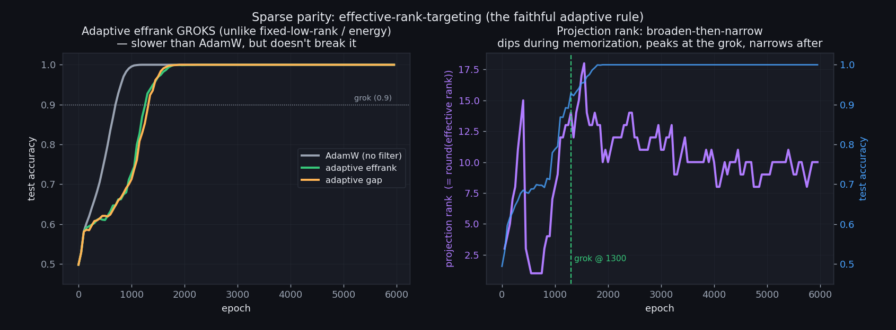
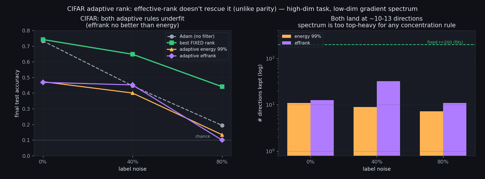
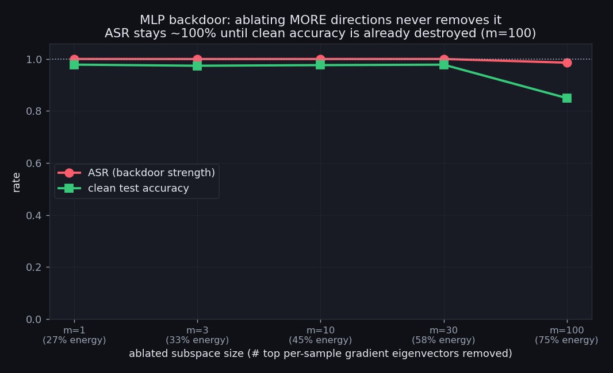

A streaming rank-1 / rank-B optimizer that projects each gradient onto the dominant directions of its own running covariance — what it does, and where it helps.
TL;DR. We wrap a standard optimizer (Adam/AdamW) with a filter that maintains a low-rank estimate of the p×p covariance of the gradient over training, and each step replaces the gradient with its projection onto the top eigen-directions. The filter resists label-noise memorization and accelerates grokking on modular addition (31% earlier, 5 seeds). But it is not a free lunch: the kept-rank is a capacity dial (more rank fits clean data but lets noise back in), it delays grokking on sparse parity, and an adaptive effective-rank rule only helps when the task's solution is genuinely low-dimensional. A supervised version removes a backdoor in a linear model but not in an MLP. The unifying lesson: the filter amplifies whatever the gradient is coherent about — which is a feature for noise robustness and a limitation everywhere the useful signal is not the dominant gradient direction.
Across a batch and across training steps, gradients have structure: in some directions many parameters' gradient components consistently move together — strongly correlated, positively or negatively — while in others they vary independently. The top eigenvectors of the gradient covariance are exactly these strong co-variation directions. The hypothesis is that the directions of strongest gradient co-variation are the generalizing signal — clusters of weights whose gradients consistently co-move across examples and steps — while the uncorrelated, low-covariance tail is memorization / noise. If so, projecting each gradient onto the top eigenvectors of its running covariance should suppress memorization while preserving real learning. (See the companion note on first- vs second-moment structure and the centered-vs-uncentered choice — which we mostly ran centered.)
The object we track is the covariance of the gradient vector g ∈ ℝ^p (flattened over
all parameters), accumulated as an exponential moving average:
Materializing C is impossible (p is 10⁵–10⁶, so C is 10¹⁰–10¹²
entries). The whole method is about tracking its top-k eigenspace cheaply, in a streaming fashion,
and projecting onto it.
We keep only the top-k eigenvectors V ∈ ℝ^{p×k} and singular values S ∈ ℝ^k.
The EMA update C ← λC + (1−λ)ĝĝᵀ is equivalent to appending one row to a factor matrix.
The trick: the updated covariance lives entirely in the span of the current basis plus the new
gradient — a (k+1)-dimensional subspace. So we never touch p×p; we build a tiny
(k+1)×(k+1) Gram matrix, eigendecompose that, and rotate the basis.
# g_hat: centered batch-mean gradient (p,). V:(p,k), S:(k,)
c = V.T @ g_hat # (k,) coords of g in current basis
g_perp = g_hat - V @ c # residual orthogonal to V
q = g_perp / g_perp.norm() # the ONE candidate new direction
# (k+1)x(k+1) Gram of [sqrt(λ)·diag(S)·Vᵀ ; sqrt(1−λ)·ĝᵀ], built in closed form:
G[:k,:k] = λ * diag(S**2)
G[:k, k] = G[k,:k] = sqrt(λ(1−λ)) * S * c
G[k , k] = (1−λ) * g_hat.dot(g_hat)
evals, evecs = eigh(G) # cheap: (k+1)x(k+1)
keep = top_k(evals) # truncate back to rank k
V, S = rotate(V, q, evecs[:,keep]), sqrt(evals[keep])
g_filtered = V @ (V.T @ g) # project gradient onto top-k, then hand to Adam
The residual q is the only way new directions enter: it is exactly "the part of this
gradient the current basis could not represent." A single gradient therefore adds at most one new
direction per step — the honest limit of rank-1 information.
Cost. Time O(pk + k³) per step (the p term is the projection; the
k³ is the small eigendecomposition), memory O(pk). For k in the low
hundreds this is ~2× Adam. No p×p object is ever formed.
Instead of the batch-mean gradient, we can feed the B per-sample gradients within a step
(computed with vmap(grad(...))). The covariance is then the uncentered second moment
C = EMA[(1/B) Σ gᵢ gᵢᵀ], and the update generalizes to rank-B via a
(k+B)×(k+B) Gram. Its top eigenvector is the direction the per-sample gradients most
agree on — the natural object for "what is the batch coherent about?"
Three rules, in increasing sophistication:
λ, which sets a ceiling of ~
1/(1−λ) on how many directions the EMA can hold).k = round(exp(H)) where H is the
Shannon entropy of the normalized spectrum: a soft count of "how many directions are meaningfully active."
We track a broad basis but only project onto the top round(effrank) each step
(decoupling estimation from projection, so the projection width can change freely).| Hypothesis | Task | Verdict |
|---|---|---|
| H1 — Filtering resists noise memorization | CIFAR-10 / MNIST label noise | SUPPORTED |
| H2 — Filtering accelerates grokking | modular addition | SUPPORTED |
| H2′ — …on all algorithmic tasks | sparse parity | REFUTED (delays) |
| H3 — Low rank isolates the signal | sparse parity | REFUTED |
| H4 — Per-sample top-k isolates the signal | sparse parity | REFUTED |
| H5 — Adaptive rank (broaden-then-narrow) helps | parity / CIFAR | MIXED |
| H6 — Supervised ablation removes a planted hack | backdoor (linear / MLP) | linear yes, MLP no |
On CIFAR-10 with symmetric label noise (small CNN, 591K params), the filter resists fitting the noise. The clearest view is the training dynamics: Adam's train accuracy climbs as it memorizes the corrupted labels, and its test accuracy peaks early then collapses; the filter refuses to memorize (train stays low) and its test accuracy holds flat.

That robustness is a capacity dial, not a free win: raising the effective rank (rank and decay together) recovers clean-data accuracy all the way to Adam, while letting more noise back in. Rank is one knob: how many gradient directions you keep.

On the canonical grokking task (modular addition, p=113), the filter brings the generalization phase transition forward by ~31% (mean over 5 seeds, non-overlapping). Consistent with the mechanism: the generalizing circuit is a strongly recurring direction, so amplifying coherence helps it win sooner.

Sparse parity (n=40, k=3) is the opposite story. Here the generalizing solution is a weak 3-bit signal that the bulk memorization direction drowns out — so amplifying the dominant direction delays generalization. A rank sweep (now filled in densely, ranks 1–200) shows a smooth transition: rank ≤4 destabilizes (memorizes then fails to grok), ranks 5–8 grok but slowly and with high seed-variance, ~10 is the fastest among filtered runs, and no rank beats AdamW. The per-sample (rank-B) variant never groks either — its top direction is the bulk-fitting mean, not the signal.
The third panel is the honest control you'd want: take the gradient covariance along a pure AdamW trajectory but only measure it (never filter with it). The active gradient dimensionality is lowest (~4–6) right through the memorization and grokking phases, and only broadens (toward the decay ceiling) after the task is solved and the loss collapses, then narrows again. So the "broaden-then-narrow" we see under filtering is not a precursor that drives grokking in the baseline — if anything the gradient is at its lowest dimensionality exactly when parity is being learned.

The intuition (from watching the gradient subspace broaden during the search and collapse afterward) is to make the rank adaptive. The naive "keep 99% of the eigenvalue energy" rule fails — the spectrum is so top-heavy that 99% of the energy lives in ~10 directions. The faithful version targets the effective rank instead.
On parity, this is the first filter variant that groks at all (1200–1400 epochs vs AdamW's 650–750): the projection rank traces a clean broaden-then-narrow — narrow during memorization, peaking right at the grok, narrowing as the solution consolidates. It auto-matches the best fixed rank with no tuning.

On CIFAR, the same rule underfits — no better than the energy rule.

Why the contrast is the real result. Effective rank measures how concentrated the gradient is, not how many directions the function needs. They coincide only for an intrinsically low-dimensional task: parity's 3-bit circuit lives in ~18 active directions, but a CIFAR CNN needs ~200 while its gradient covariance is concentrated in ~12. Adaptive spectral rank helps iff the task's solution is genuinely low-dimensional — the algorithmic regime, not the perceptual one.
If coherent structure can be amplified, can a known-bad direction be removed? As a proxy for reward-hacking / emergent misalignment, we plant a backdoor (trigger patch → target class) and ablate the trigger gradient direction during training. On a linear model this works: attack success drops 99.9% → 8% at ~1% clean-accuracy cost. On an MLP it fails completely — and ablating a larger subspace doesn't rescue it.

Implication for the emergent-misalignment direction: single/few-direction gradient ablation is unlikely to remove a learned behaviour in a nonlinear network — a capability- or activation-level intervention is probably needed.
One mechanism explains the whole spread of results: the filter is a coherence amplifier. It keeps whatever the gradient repeatedly agrees on and discards the transient tail.
Code: experiments/weight_cov_optimizer_v2.py (filter), persample_cov_optimizer.py
(rank-B), run_cifar_noise.py, modal_sparse_parity.py,
modal_parity_adaptive.py, backdoor_ablation_mlp.py. Full write-ups:
weight_covariance_v2_summary.md, grokking_v2_findings.md,
targeted_ablation_findings.md. Rank-1 derivation: rank1_svd_explainer.html.